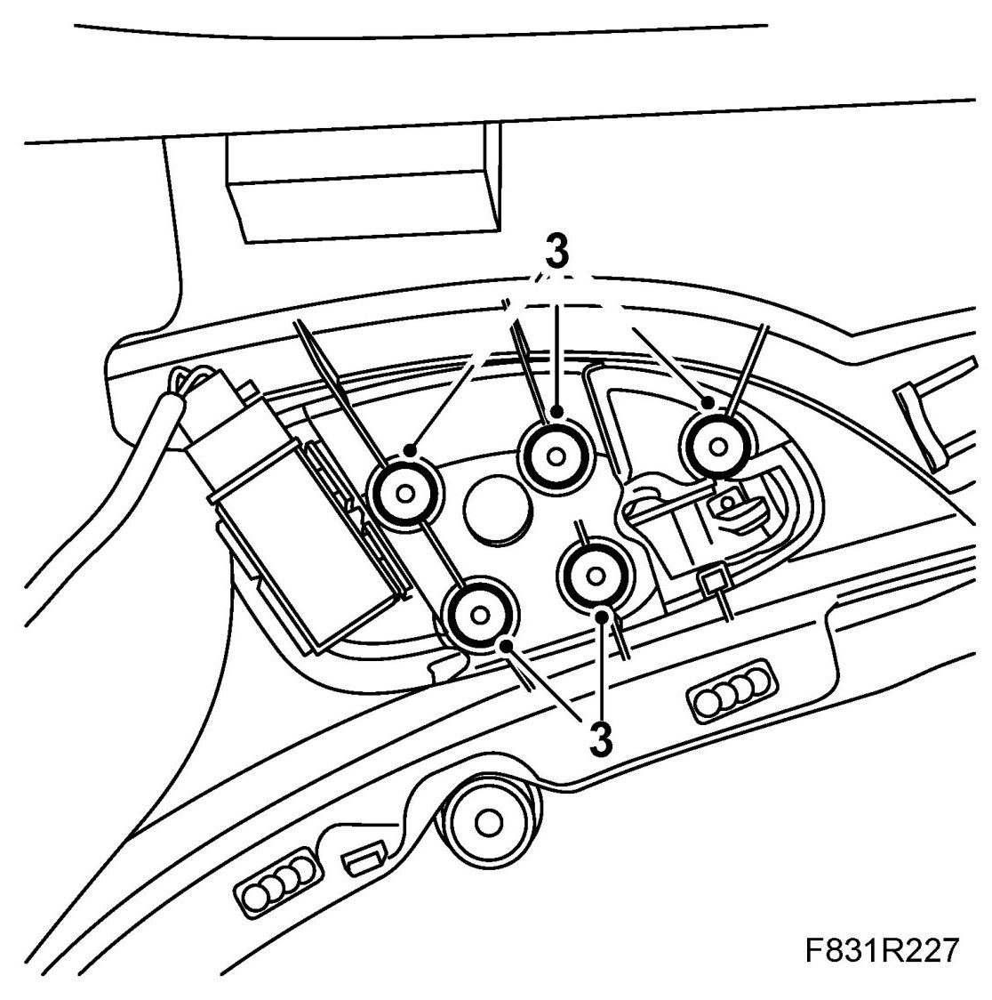
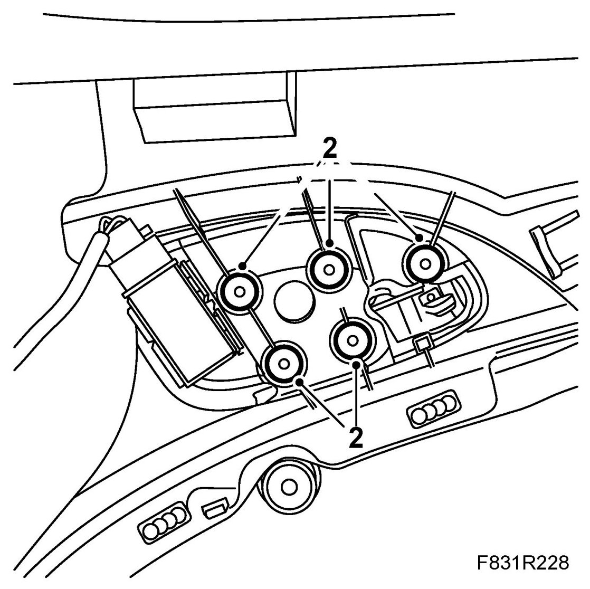

Front Door Interior Handle: Service and Repair
Interior Door Handle
To remove
1. Remove Door trim, front, 4D, Door trim, rear or Door trim, CV
2. Place the door trim on a soft, clean surface.
3. Using an 8 mm drill bit, drill out the plastic rivets in the door handle.

4. Remove the handle.
To fit
1. Position the new handle.
2. Melt the plastic rivets in the handle to secure them using a soldering iron.

3. Fit Door trim, front, 4D, Door trim, CV or Door trim, rear,
4. Cars with pinch protection: Perform Programming of the pinch protection.